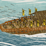
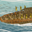

Requires
- Buildings:

Enables
- Buildings:

- Units:


 

Basic Building Statistics (can be modified by difficulty level, arts, skills, traits and retainers)
- Cost: 1020
- +100 to wealth from ports in this province
- +1 per turn to town growth from ports within this province
- Recruitment capacity (ship under construction): +2
Description
The wave spirits wash away the cowardly.
A military port builds and repairs warships, a specialised task that requires specialised yards and specialist craftsmen. Warships must, of course, be built to withstand not only the power of the sea, but everything the enemy can throw at them. Japanese warships were not the same as those of most other medieval navies. Rather than attacking a an enemy ship's structure with large weapons, Japanese ships acted as floating platforms for boarding actions. The crew were the targets of any attacks. The intention in any naval engagement was always to close with the enemy, grapple, and then fight a land battle across the lashed-together ships. This meant that a relatively large crew of soldiers was required, resulting in horrendous casualties in most naval engagements. The losing side simply could not run away from a sea battle; what few prisoners were taken would often be tossed overboard at the end of the battle, or the losers would throw themselves into the sea. This happened at the decisive Battle of Dan-no-ura in 1185, that brought the Gempei War to a close.